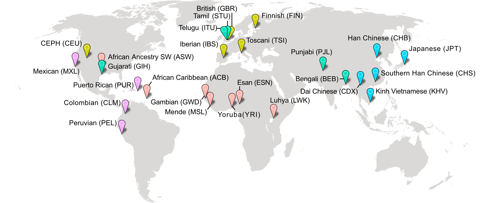
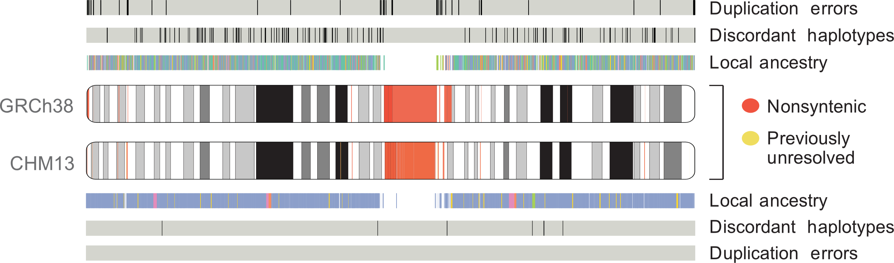

Uncovering disease mechanisms through human genetics and genomics
I am a Human Genetics Scientist at Arena BioWorks, where I lead the development of human genetics pipelines to identify and prioritize therapeutic targets. My work integrates GWAS, post-GWAS analyses, and genetic evidence to guide drug discovery.
I got my PhD from the Cell, Molecular, Developmental Biology and Biophysics (CMDB) program at Johns Hopkins University, advised by Dr. Rajiv McCoy. During my PhD, I developed and led analysis of MAGE, a large, globally diverse human transcriptomics dataset. This work focused on uncovering biologically relevant variation in underrepresented populations and linking it to molecular mechanisms driving human traits and disease.
Additionally, as a member of the T2T Consortium, I helped develop the first truly complete human genome assembly, explored the added benefit of this assembly in studying human genetic variation, and curated several massive catalogues of human genetic variation using this new reference genome.
I obtained my B.S. in Biology from the University of Maryland, College Park. There, I worked with Dr. Mihai Pop to develop computational tools for high-resolution metagenomic profiling.
Research Projects
Exploring human regulatory sequences
The MAGE resource comprises RNA-seq data from 731 individuals across 26 globally diverse populations. Adapted from
The vast majority of human trait-associated genetic variation lies in non-coding regions of the genome. Additionally, genetic variation affecting gene expression and alternative splicing has been shown to be a major contributor of human traits and disease. Unfortunately, the molecular mechanisms by which trait-associated non-coding variation drive phenotypic differences between individuals are still not well-characterized.
Previous studies investigating these links in humans have been strongly biased toward participants of European ancestries, diminishing generalizability and hindering functional and evolutionary research. To address these limitations, I developed and led analysis of MAGE, a resource for Multi-ancestry Analysis of Gene Expression. MAGE is an open-access RNA-seq data set of lymphoblastoid cell lines from 731 individuals from the 1000 Genomes Project spread across 5 continental groups and 26 populations. I used MAGE to identify tens of thousands of independent expression- and splicing-linked genetic variants, many of which are private to previously under-represented populations. We observe that "population-specific" effects are rare, and properly-specified models using diverse data sets produce results that replicate between populations. We hope MAGE acts an inclusive resource for more equitably studying the evolution and function of human genomes. Check out the GitHub page for data access and analysis pipelines.
Separately, the VISION project uses massive epigenomic datasets from hematopoetic cells lines to characterize and validate regulatory sequences in the human and mouse genomes, and to build better models of gene expression and regulation. As part of an effort to identify candidate cis-regulatory elements (cCREs) using cross-species epigenomic data, I led an analysis exploring the enrichment of the identified cCREs in heritability of human blood-related traits. Validating their characterization, we find that the identified cCREs are significantly enriched in and highly specific to human blood cell phenotypes.
Relevant publications
Characterizing a complete human reference genome
Comparison of chr1 assembly between GRCh38 and T2T-CHM13. Adapted from
The first human genome sequence—completed in 2003 as part of the Human Genome Project—covered 92% of the full genome. That last 8% (almost 200 million bases)—largely comprised of difficult-to-resolve repetitive sequences—eluded scientists for nearly two decades. However, in 2021 the Telomere-to-Telomere (T2T) Consortium finally assembled a 100% complete human genome (T2T-CHM13), using long-read technologies to fill in the missing gaps and correct errors in the previous assembly.
As a member of this consortium, I helped characterize the utility of using this assembly as a reference for analysis of human genetic variation. I led analyses characterizing variation in previously-unresolved regions of the genome and facilitated the transition from the current widely used human reference genome (GRCh38) to the new T2T-CHM13 assembly by lifting over several catalogs of human genetic variation (over 700 million distinct genetic variants)—to the new reference.
Recently, the T2T Consortium finished our assembly of a human Y chromosome, completing the T2T-CHM13v2.0 reference genome. This assembly adds 30 million bases of new sequence (over 50% of the chromosome!) and corrects errors in the previous assembly. Building on my work with the T2T-CHM13v1.0 assembly, I led the analysis of short-read alignment and variant calling using this new assembly, characterizing the improvements offered relative to the previous reference.
Relevant publications
* denotes co-first authorship
For a full list of publications, please see my CV below.
Honors and Awards
NIH Ruth L. Kirschstein National Research Service Award/F31 Fellowship (2023)
The Ruth L. Kirschstein National Research Service Award (NRSA) Individual Predoctoral Fellowship award funds promising predoctoral students, enabling them to obtain individualized, mentored research training from outstanding faculty sponsors while conducting dissertation research in scientific health-related fields relevant to the missions of the participating NIH Institutes and Centers.
I was awarded an F31 Fellowship from the National Human Genome Research Institute (NHGRI) for my work uncovering sources of human gene expression variation in a globally diverse cohort, described above.
Adapted from grants.nih.gov
NSF Graduate Research Fellowship Program - Honorable Mention (2021)
The National Science Foundation (NSF) Graduate Research Fellowship Program provides Fellowships to individuals selected early in their graduate careers based on their demonstrated potential for significant achievements in science and engineering. The NSF accords Honorable Mention to meritorious applicants who do not receive Fellowship awards. This is considered a significant national academic achievement.
Adapted from nsf.gov
JHU Center for Teaching Excellence and Innovation Instructional Enhancement Grant (2021)
The Instructional Enhancement Grant Program is a mini-grant initiative that enables faculty to partner with technology savvy students to develop resources that enhance pedagogy, increase or facilitate access to course content, encourage active learning, promote critical thinking, and support student collaboration.
Adapted from ctei.jhu.edu
JHU Department of Biology Victor G. Corces Teaching Award (2021)
The Victor G. Corces Teaching Award recognizes a graduate Teaching Assistant in the Department of Biology for their outstanding efforts, enduring devotion to their students, and excellence in education in the biological sciences. This is a funded award.
Student Speaker for Univeristy of Maryland CMNS Commencement (2018)
I was selected to represent my graduating class as the Student Commencement Speaker for the University of Maryland College of Computer, Mathematical, and Natural Sciences (CMNS) Winter 2018 graduation ceremony.
For a full list of awards, please see my CV below.
Teaching
Quantitative Biology
Since 2020, I have served as a teaching assistant for the CMDB program's one-week Quantitative Biology Bootcamp. The course is taken by all first-year Ph.D. students in the CMDB program and is designed to introduce biology students with little to no computational experience to the basics of computational biology. Students learn basic Python and Bash, and apply these languages to carry out simple analyses on biological data.
These concepts are built on in a year-long Quantitative Biology Lab course, for which I also serve as a teaching assistant. Using the skills they learned in the bootcamp, students develop their own implementations of widely-used computational biology tools. These projects range from genome assembly, to sequence alignment and GWAS.
In addition to serving as a teaching assistant for the Quantitative Biology lab course, I also developed and teach a guest lecture for the course. My lecture covers local and global sequence alignment, introduces students to tools in use in the field today, and leads students in developing their own implementation of the Needleman-Wunsch dynamic programming algorithm for global sequence alignment. This lecture has been listed as one of the student's favorite lectures in anonymous reviews each year it has been taught.
Additionally, I've served as a guest lecturer for Cold Spring Harbor Laboratory's Advanced sequencing technologies and bioinformatics analysis course, which explores the use and applications of massively parallel sequencing technologies, with a focus on data analysis and bioinformatics, including variant calling, transcriptome analysis, single cell analysis, metagenomics, and epigenomics.
Developmental Genetics
During the 2020-2021 school year, I served as a teaching assistant for the undergraduate Developmental Genetics Lab course. This course covers the basics of C. elegans development and introduces students to genetic modification using the CRISPR/Cas9 system. As part of the lab, students use CRISPR to add a fluorescent tag to a protein of interest, allowing them to track this protein over the course of C. elegans development. A large portion of this course focuses on properly designing the genetic constructs necessary to carry out their specific CRISPR modification.
Designing CRISPR reagents requires analysis of DNA sequences and extraction of specific strings of bases, and therefore lends itself to teaching students basic string manipulation skills. Along with fellow TA Sara Carioscia, I was awarded a Instructional Enhancement Grant Program Fellowship by the Johns Hopkins University Center for Teaching Excellence and Innovation to design a module for the Developmental Genetics course that guides students through a computational tool for CRISPR reagent design. We jointly developed a module that covers the basics of Python and string manipulation and then has students build on these skills to build a full CRISPR reagent design tool from scratch. This module allows us to introduce computational biology to undergraduate students that may not have had previous exposure, and gives them the chance to use what they’ve learned to build a computational tool that they can use in their own research. The module, in its current state, is publicly available through my GitHub.
Academic Service
HMM Workshop with Agara Bio
In the Fall of 2020 and Spring of 2021, I developed and taught a computational biology workshop for Agara Bio, an undergraduate-driven community lab at JHU. We offered a two-part workshop covering Hidden Markov Models (HMMs), and led attendees in building their own gene-finding HMM in Jupyter Notebooks.
CMDB BioReps
I was elected to serve as a BioRep for my Ph.D. cohort. The BioReps are student-elected representatives within the CMDB program that act as liasons between their graduate cohort, and the program directors and administration. We meet regularly with our cohorts, host monthly town halls, and are also involved in organizing the recruitment event for prospective students.